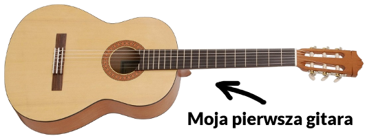
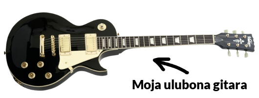

Kilka słów o autorze strony
Bardzo mi miło, że chcesz się czegoś o mnie dowiedzieć ;)
Nazywam się Marcin, mam 19 lat i pochodzę z Łomży (woj. podlaskie). Pierwszą gitarę kupiłem w sierpniu 2012 roku. Była to gitara klasyczna marki Yamaha, konkretnie model C30M. I tak oto zaczęła się moja przygoda z tym niesamowitym instrumentem.

Z początku na lekcje gry chodziłem do prywatnego nauczyciela, który gra w zespole bluesowym. Jednak później stwierdziłem, że wolę uczyć się samemu. Całą wiedzę dotyczącą grania na gitarze czerpię z internetu, i tą wiedzą w pewnym stopniu zamierzam się z tobą podzielić.
Jednak moim marzeniem zawsze była gitara elektryczna, to też w grudniu tego samego roku, jako prezent na święta dostałem gitarę elektryczną, Squier Bullet Stratocaster. Oczywiście była to gitara typowo do nauki (kosztowała ok. 500zł, a za tą cenę nie można oczekiwać aby instrument był wykonany dobrze, co najwyżej poprawnie), więc kilka lat później kupiłem gitarę, którą mam i na której gram do dzisiaj: Vintage V100BB. Wymieniłem w niej klucze na blokowane, aby dłużej trzymała strój (no i trochę łatwiej zmienia się na nich struny, a ja jestem troszeczkę leniwy ;) ) oraz założyłem straplocki. Co to są straplocki? W skrócie: zapewniają w 99%, że pas gitarowy nie odepnie się od gitary i nasza gitara nie spadnie na ziemię rozpadając się w tysiące drobnych kawałków (może lekko przesadziłem).

Przeważnie gram covery różnych piosenek oraz odwzorowuję lub tworzę własne wersję znanych już melodii. Parę razy grałem na koncertach w szkole, które wspominam bardzo dobrze. Ten zastrzyk energii, który dostajesz będąc i grając na scenie jest nie do opisania. Coś pięknego, polecam każdemu to przeżyć. Czasami nawet nagrywam moją grę i publikuję ją w internecie. Do tej pory na moim kanale (link) dostępne są dwa covery, jednak w przyszłości zamierzam aby było ich znacznie więcej. Poniżej przedstawiam dwa obecne na moim kanale covery.
Cover piosenki ze Spongeboba nagrałem z moim przyjacielem. Są tam dwie gitary, jedna to gitara rytmiczna (gra Michał), a druga to gitara prowadząca (gram ja). Z kolei w coverze piosenki z Władcy Pierścieni gram jednocześnie, w dwóch oddzielnych ścieżkach zarówno gitarę prowadzącą, jak i rytmiczną.